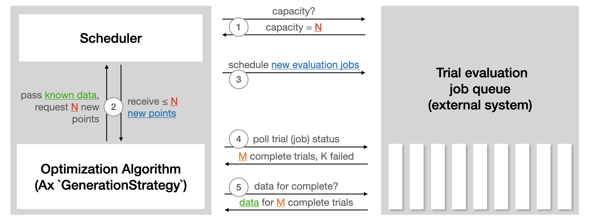

Note
Go to the end to download the full example code.
Multi-Objective NAS with Ax#
Created On: Oct 02, 2025 | Last Updated: Oct 02, 2025 | Last Verified: Nov 05, 2024
Authors: David Eriksson, Max Balandat, and the Adaptive Experimentation team at Meta.
In this tutorial, we show how to use Ax to run multi-objective neural architecture search (NAS) for a simple neural network model on the popular MNIST dataset. While the underlying methodology would typically be used for more complicated models and larger datasets, we opt for a tutorial that is easily runnable end-to-end on a laptop in less than 20 minutes.
In many NAS applications, there is a natural tradeoff between multiple objectives of interest. For instance, when deploying models on-device we may want to maximize model performance (for example, accuracy), while simultaneously minimizing competing metrics like power consumption, inference latency, or model size in order to satisfy deployment constraints. Often, we may be able to reduce computational requirements or latency of predictions substantially by accepting minimally lower model performance. Principled methods for exploring such tradeoffs efficiently are key enablers of scalable and sustainable AI, and have many successful applications at Meta - see for instance our case study on a Natural Language Understanding model.
In our example here, we will tune the widths of two hidden layers, the learning rate, the dropout probability, the batch size, and the number of training epochs. The goal is to trade off performance (accuracy on the validation set) and model size (the number of model parameters).
This tutorial makes use of the following PyTorch libraries:
PyTorch Lightning (specifying the model and training loop)
TorchX (for running training jobs remotely / asynchronously)
BoTorch (the Bayesian Optimization library powering Ax’s algorithms)
Defining the TorchX App#
Our goal is to optimize the PyTorch Lightning training job defined in mnist_train_nas.py. To do this using TorchX, we write a helper function that takes in the values of the architecture and hyperparameters of the training job and creates a TorchX AppDef with the appropriate settings.
from pathlib import Path
import torchx
from torchx import specs
from torchx.components import utils
def trainer(
log_path: str,
hidden_size_1: int,
hidden_size_2: int,
learning_rate: float,
epochs: int,
dropout: float,
batch_size: int,
trial_idx: int = -1,
) -> specs.AppDef:
# define the log path so we can pass it to the TorchX ``AppDef``
if trial_idx >= 0:
log_path = Path(log_path).joinpath(str(trial_idx)).absolute().as_posix()
return utils.python(
# command line arguments to the training script
"--log_path",
log_path,
"--hidden_size_1",
str(hidden_size_1),
"--hidden_size_2",
str(hidden_size_2),
"--learning_rate",
str(learning_rate),
"--epochs",
str(epochs),
"--dropout",
str(dropout),
"--batch_size",
str(batch_size),
# other config options
name="trainer",
script="mnist_train_nas.py",
image=torchx.version.TORCHX_IMAGE,
)
Setting up the Runner#
Ax’s Runner abstraction allows writing interfaces to various backends. Ax already comes with Runner for TorchX, and so we just need to configure it. For the purpose of this tutorial we run jobs locally in a fully asynchronous fashion.
In order to launch them on a cluster, you can instead specify a
different TorchX scheduler and adjust the configuration appropriately.
For example, if you have a Kubernetes cluster, you just need to change the
scheduler from local_cwd to kubernetes).
import tempfile
from ax.runners.torchx import TorchXRunner
# Make a temporary dir to log our results into
log_dir = tempfile.mkdtemp()
ax_runner = TorchXRunner(
tracker_base="/tmp/",
component=trainer,
# NOTE: To launch this job on a cluster instead of locally you can
# specify a different scheduler and adjust arguments appropriately.
scheduler="local_cwd",
component_const_params={"log_path": log_dir},
cfg={},
)
Setting up the SearchSpace#
First, we define our search space. Ax supports both range parameters of type integer and float as well as choice parameters which can have non-numerical types such as strings. We will tune the hidden sizes, learning rate, dropout, and number of epochs as range parameters and tune the batch size as an ordered choice parameter to enforce it to be a power of 2.
from ax.core import (
ChoiceParameter,
ParameterType,
RangeParameter,
SearchSpace,
)
parameters = [
# NOTE: In a real-world setting, hidden_size_1 and hidden_size_2
# should probably be powers of 2, but in our simple example this
# would mean that ``num_params`` can't take on that many values, which
# in turn makes the Pareto frontier look pretty weird.
RangeParameter(
name="hidden_size_1",
lower=16,
upper=128,
parameter_type=ParameterType.INT,
log_scale=True,
),
RangeParameter(
name="hidden_size_2",
lower=16,
upper=128,
parameter_type=ParameterType.INT,
log_scale=True,
),
RangeParameter(
name="learning_rate",
lower=1e-4,
upper=1e-2,
parameter_type=ParameterType.FLOAT,
log_scale=True,
),
RangeParameter(
name="epochs",
lower=1,
upper=4,
parameter_type=ParameterType.INT,
),
RangeParameter(
name="dropout",
lower=0.0,
upper=0.5,
parameter_type=ParameterType.FLOAT,
),
ChoiceParameter( # NOTE: ``ChoiceParameters`` don't require log-scale
name="batch_size",
values=[32, 64, 128, 256],
parameter_type=ParameterType.INT,
is_ordered=True,
sort_values=True,
),
]
search_space = SearchSpace(
parameters=parameters,
# NOTE: In practice, it may make sense to add a constraint
# hidden_size_2 <= hidden_size_1
parameter_constraints=[],
)
Setting up Metrics#
Ax has the concept of a Metric that defines properties of outcomes and how observations are obtained for these outcomes. This allows e.g. encoding how data is fetched from some distributed execution backend and post-processed before being passed as input to Ax.
In this tutorial we will use multi-objective optimization with the goal of maximizing the validation accuracy and minimizing the number of model parameters. The latter represents a simple proxy of model latency, which is hard to estimate accurately for small ML models (in an actual application we would benchmark the latency while running the model on-device).
In our example TorchX will run the training jobs in a fully asynchronous
fashion locally and write the results to the log_dir based on the trial
index (see the trainer() function above). We will define a metric
class that is aware of that logging directory. By subclassing
TensorboardCurveMetric
we get the logic to read and parse the TensorBoard logs for free.
from ax.metrics.tensorboard import TensorboardMetric
from tensorboard.backend.event_processing import plugin_event_multiplexer as event_multiplexer
class MyTensorboardMetric(TensorboardMetric):
# NOTE: We need to tell the new TensorBoard metric how to get the id /
# file handle for the TensorBoard logs from a trial. In this case
# our convention is to just save a separate file per trial in
# the prespecified log dir.
def _get_event_multiplexer_for_trial(self, trial):
mul = event_multiplexer.EventMultiplexer(max_reload_threads=20)
mul.AddRunsFromDirectory(Path(log_dir).joinpath(str(trial.index)).as_posix(), None)
mul.Reload()
return mul
# This indicates whether the metric is queryable while the trial is
# still running. We don't use this in the current tutorial, but Ax
# utilizes this to implement trial-level early-stopping functionality.
@classmethod
def is_available_while_running(cls):
return False
Now we can instantiate the metrics for accuracy and the number of model parameters. Here curve_name is the name of the metric in the TensorBoard logs, while name is the metric name used internally by Ax. We also specify lower_is_better to indicate the favorable direction of the two metrics.
val_acc = MyTensorboardMetric(
name="val_acc",
tag="val_acc",
lower_is_better=False,
)
model_num_params = MyTensorboardMetric(
name="num_params",
tag="num_params",
lower_is_better=True,
)
Setting up the OptimizationConfig#
The way to tell Ax what it should optimize is by means of an
OptimizationConfig.
Here we use a MultiObjectiveOptimizationConfig as we will
be performing multi-objective optimization.
Additionally, Ax supports placing constraints on the different metrics by specifying objective thresholds, which bound the region of interest in the outcome space that we want to explore. For this example, we will constrain the validation accuracy to be at least 0.94 (94%) and the number of model parameters to be at most 80,000.
from ax.core import MultiObjective, Objective, ObjectiveThreshold
from ax.core.optimization_config import MultiObjectiveOptimizationConfig
opt_config = MultiObjectiveOptimizationConfig(
objective=MultiObjective(
objectives=[
Objective(metric=val_acc, minimize=False),
Objective(metric=model_num_params, minimize=True),
],
),
objective_thresholds=[
ObjectiveThreshold(metric=val_acc, bound=0.94, relative=False),
ObjectiveThreshold(metric=model_num_params, bound=80_000, relative=False),
],
)
Creating the Ax Experiment#
In Ax, the Experiment object is the object that stores all the information about the problem setup.
from ax.core import Experiment
experiment = Experiment(
name="torchx_mnist",
search_space=search_space,
optimization_config=opt_config,
runner=ax_runner,
)
Choosing the Generation Strategy#
A GenerationStrategy is the abstract representation of how we would like to perform the optimization. While this can be customized (if you’d like to do so, see this tutorial), in most cases Ax can automatically determine an appropriate strategy based on the search space, optimization config, and the total number of trials we want to run.
Typically, Ax chooses to evaluate a number of random configurations before starting a model-based Bayesian Optimization strategy.
total_trials = 48 # total evaluation budget
from ax.modelbridge.dispatch_utils import choose_generation_strategy
gs = choose_generation_strategy(
search_space=experiment.search_space,
optimization_config=experiment.optimization_config,
num_trials=total_trials,
)
Configuring the Scheduler#
The Scheduler acts as the loop control for the optimization.
It communicates with the backend to launch trials, check their status,
and retrieve results. In the case of this tutorial, it is simply reading
and parsing the locally saved logs. In a remote execution setting,
it would call APIs. The following illustration from the Ax
Scheduler tutorial
summarizes how the Scheduler interacts with external systems used to run
trial evaluations:

The Scheduler requires the Experiment and the GenerationStrategy.
A set of options can be passed in via SchedulerOptions. Here, we
configure the number of total evaluations as well as max_pending_trials,
the maximum number of trials that should run concurrently. In our
local setting, this is the number of training jobs running as individual
processes, while in a remote execution setting, this would be the number
of machines you want to use in parallel.
from ax.service.scheduler import Scheduler, SchedulerOptions
scheduler = Scheduler(
experiment=experiment,
generation_strategy=gs,
options=SchedulerOptions(
total_trials=total_trials, max_pending_trials=4
),
)
Running the optimization#
Now that everything is configured, we can let Ax run the optimization in a fully automated fashion. The Scheduler will periodically check the logs for the status of all currently running trials, and if a trial completes the scheduler will update its status on the experiment and fetch the observations needed for the Bayesian optimization algorithm.
scheduler.run_all_trials()
Evaluating the results#
We can now inspect the result of the optimization using helper functions and visualizations included with Ax.
First, we generate a dataframe with a summary of the results of the experiment. Each row in this dataframe corresponds to a trial (that is, a training job that was run), and contains information on the status of the trial, the parameter configuration that was evaluated, and the metric values that were observed. This provides an easy way to sanity check the optimization.
from ax.service.utils.report_utils import exp_to_df
df = exp_to_df(experiment)
df.head(10)
We can also visualize the Pareto frontier of tradeoffs between the validation accuracy and the number of model parameters.
Tip
Ax uses Plotly to produce interactive plots, which allow you to do things like zoom, crop, or hover in order to view details of components of the plot. Try it out, and take a look at the visualization tutorial if you’d like to learn more).
The final optimization results are shown in the figure below where the color corresponds to the iteration number for each trial. We see that our method was able to successfully explore the trade-offs and found both large models with high validation accuracy as well as small models with comparatively lower validation accuracy.
from ax.service.utils.report_utils import _pareto_frontier_scatter_2d_plotly
_pareto_frontier_scatter_2d_plotly(experiment)
To better understand what our surrogate models have learned about the black box objectives, we can take a look at the leave-one-out cross validation results. Since our models are Gaussian Processes, they not only provide point predictions but also uncertainty estimates about these predictions. A good model means that the predicted means (the points in the figure) are close to the 45 degree line and that the confidence intervals cover the 45 degree line with the expected frequency (here we use 95% confidence intervals, so we would expect them to contain the true observation 95% of the time).
As the figures below show, the model size (num_params) metric is
much easier to model than the validation accuracy (val_acc) metric.
from ax.modelbridge.cross_validation import compute_diagnostics, cross_validate
from ax.plot.diagnostic import interact_cross_validation_plotly
from ax.utils.notebook.plotting import init_notebook_plotting, render
cv = cross_validate(model=gs.model) # The surrogate model is stored on the ``GenerationStrategy``
compute_diagnostics(cv)
interact_cross_validation_plotly(cv)
We can also make contour plots to better understand how the different objectives depend on two of the input parameters. In the figure below, we show the validation accuracy predicted by the model as a function of the two hidden sizes. The validation accuracy clearly increases as the hidden sizes increase.
from ax.plot.contour import interact_contour_plotly
interact_contour_plotly(model=gs.model, metric_name="val_acc")
Similarly, we show the number of model parameters as a function of
the hidden sizes in the figure below and see that it also increases
as a function of the hidden sizes (the dependency on hidden_size_1
is much larger).
interact_contour_plotly(model=gs.model, metric_name="num_params")
Acknowledgments#
We thank the TorchX team (in particular Kiuk Chung and Tristan Rice) for their help with integrating TorchX with Ax.